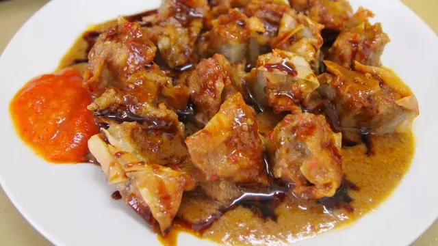

Batagor bandung (Tanpa Ikan)

Source : https://cookpad.com/id/resep/3469408-batagor-bandung-tanpa-ikan
Bahan - Bahan
200 gr tepung span tapioka / sagu
100 gr tepung terigu
1/2 sdt lada bubuk
1 sdt kaldu bubuk
1 sdt garam
2 lembar daun bawang
Air Secukupnya
10 buah tahu putih
1 bungkus kulit pangsit
Saus kacang
Bumbu Pecel
Kecap Secukupnya
Mentimun Secukupnya
Cara Membuat